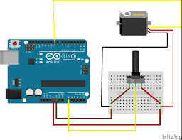

In this project, we will control the position of a servo motor manually using a potentiometer (knob). This is a fundamental concept for building robotic arms, camera gimbals, or any system where you need manual control over movement.
1. Concept and Description
In this project, we will control the position of a servo motor manually using a potentiometer (knob). This is a fundamental concept for building robotic arms, camera gimbals, or any system where you need manual control over movement.
2. Components Needed
Arduino Uno Board
USB Cable
Micro Servo Motor (SG90 or similar)
Potentiometer (10kΩ recommended)
Jumper Wires
3. Physical Montage (Wiring Instructions)

Connect the components as follows:
Servo Red to 5V
Servo Brown/Black to GND
Servo Orange/Yellow to Pin 9
Potentiometer Left Pin to 5V
Potentiometer Right Pin to GND
Potentiometer Middle Pin to Pin A0
4. The Code (Arduino Sketch)
Copy and paste the code below into your Arduino IDE.
#include
Servo myservo; // create servo objectint potPin = A0; // analog pin used to connect the potentiometerint val; // variable to read the value from the analog pinvoid setup() {
myservo.attach(9); // attaches the servo on pin 9 to the servo object
}
void loop() {
val = analogRead(potPin); // reads the value of the potentiometer (value between 0 and 1023)
val = map(val, 0, 1023, 0, 180); // scale it to use it with the servo (value between 0 and 180)
myservo.write(val); // sets the servo position according to the scaled valuedelay(15); // waits for the servo to get there
}